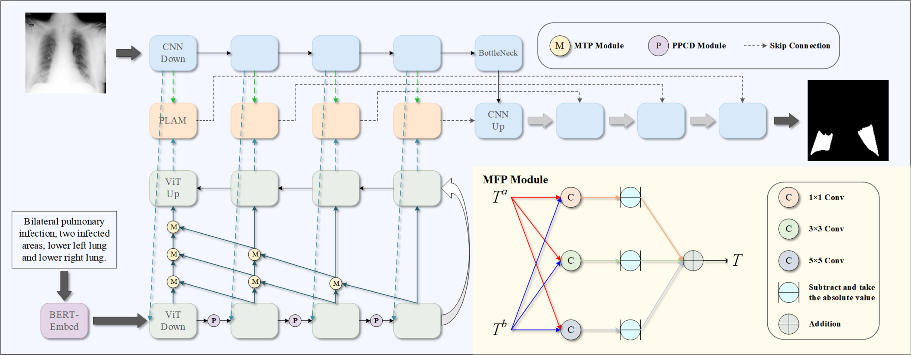

MTGT¶
About¶
MTGT (Multiscale Text Feature-Guided Transformer) is a deep learning framework for medical image segmentation. It uses multiscale text features to guide a Transformer architecture and improve segmentation performance on medical imaging datasets.

Installation¶
Software Requirements¶
Python 3.x
PyTorch (GPU version recommended for training)
Common Python libraries used by the repository (for example NumPy, pandas, OpenCV)
Hardware Requirements¶
A CUDA-capable GPU with sufficient memory is recommended
Default batch size is 4; reduce to 2 in
Config.pyif out-of-memory errors occur
Obtain MTGT¶
Clone the repository:
git clone https://github.com/zlxokok/MTGT.git
Enter the project directory:
cd MTGT
Usage¶
MTGT includes model training (main_MTGT.py) and inference (infer_MTGT.py).
Input Files¶
Medical image datasets with paired segmentation masks
Config.pyfor dataset paths and hyperparametersBUSI split files such as
Train_text.xlsxandVal_text.xlsx
Training¶
python main_MTGT.py
Main outputs:
Trained model checkpoint
Training logs and metrics (for example loss and mIoU)
Inference¶
python infer_MTGT.py
Main outputs:
Predicted segmentation masks
Evaluation metrics (for example mDice, mIoU, Recall, Precision, and F1-score)
License¶
This project is publicly shared without a specified license. Contact the repository author for usage permission details.
Contact¶
For questions about MTGT:
Citation¶
If you use MTGT in your research, cite:
Zhao L, Wang T, Zhang X, et al. MTGT: Multiscale Text Feature-Guided Transformer in medical image segmentation. Image and Vision Computing, 2026, 165: 105846.